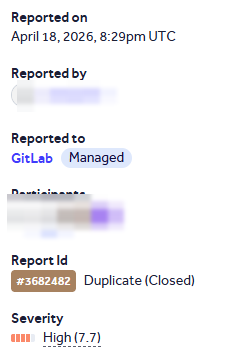
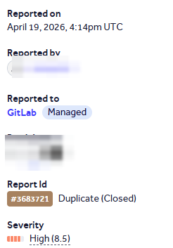
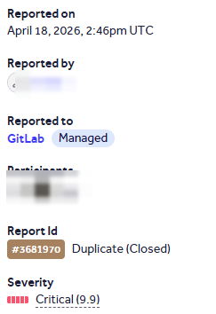
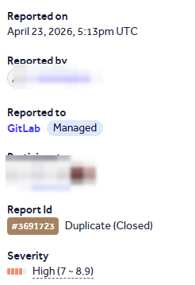
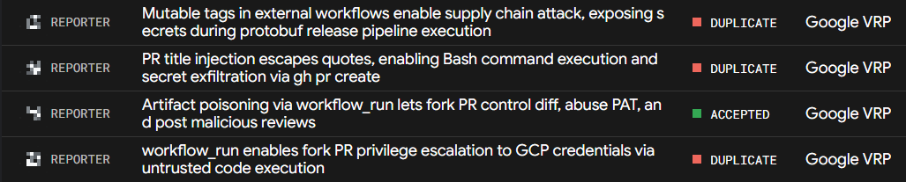
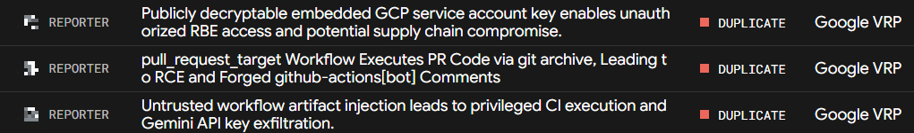

I am an offensive security researcher and student. Online I go by Squ1shification.
I find and report vulnerabilities in real software — kernel drivers, mail servers, CI/CD pipelines and cloud platforms.
I have been credited in security advisories by WinFsp and OpenBSD, and hold a published CVE.
I earn bug bounties — resolved reports with Nextcloud and Google’s OSS VRP.
I build offensive tooling. My Sliver C2 Evasion Suite and other projects live on GitHub.
WinFsp’s kernel driver trusts a 16-bit size on every notify record, but it only ever checks that the
size is big enough — never that it actually fits in the buffer you sent. So I handed it one
record that claimed to be 0xFFFF bytes while passing barely ten, and the driver walked ~64 KB
off the end of its own allocation, reading adjacent kernel pool as if it were a filename. That reliably
bugchecks the box, and with a little pool grooming those leaked bytes come straight back to user space
through change-notifications — enough to recover kernel pointers and defeat KASLR. Any local user can
do it, and a single bounds check closes it. Here’s the full write-up and PoC.

OpenSMTPD lets you build delivery commands out of pieces of the envelope, and the raw
modifier is meant to scrub the dangerous characters out first. It didn’t — the user and domain
parts went into the delivery agent’s environment untouched. Put the right characters in an address and
they survive all the way into the shell the MDA runs, which is code execution. I reported it to Gilles, who
fixed it with a new mda_escape() that filters those characters across every address field; it
shipped as an OpenBSD errata. I wrote it up here, with a short demo.
Sliver’s HTTP(S) listener will decode whatever PNG you send it with no cap on the decoded size, and the channel that gets you there only has 65,537 nonces to guess. So you brute-force your way in without any auth and send a few-kilobyte “PNG boomer” that claims to be 32767×32767 — decoding it tries to allocate gigabytes and the operator’s C2 server falls over. Full write-up.
Nextcloud’s check for whether a SubAdmin may manage another user blocks full admins but completely
forgets the newer DelegatedAdmin role. If you’re a SubAdmin and you share even one group
with a DelegatedAdmin, you can reset their password straight through the Provisioning API and log in as them
— and they can manage every user on the instance. Group-scoped admin to global user manager, all from
one missing line. Full write-up.

Carbon-lang runs a fork’s pre-commit hooks and uploads the resulting git diff —
plus a copy of the GitHub event — as an artifact. A second, privileged workflow then pipes that diff
into reviewdog using a bot’s token, and never checks the artifact actually came from the
real repo. Since a fork controls both its source and its pre-commit config, it controls that diff — so
a malicious PR can make the trusted bot post whatever review comments it likes, and by rewriting the event
file first, aim them at any PR in the project. Full write-up.
Other reports — duplicates. A handful of issues I reported turned out to be duplicates of things already triaged from other researchers. I’m keeping them here for completeness.






A four-kit defense-evasion suite for the Sliver C2 framework: a Crystal Palace loader, sleep masking, in-memory PE execution, and remote process injection with PPID spoofing.
Weaponised PoC for CVE-2026-77622 — a PNG-bomb that remotely exhausts memory on a Sliver HTTP(S) C2 server (GHSA-663m-7x7m-g4fw).
Path-traversal plugin-enumeration PoC for Grafana CVE-2021-43798.
Public study notes and cheat sheets from the certifications and tracks I work through:
- OSEP — PEN-300, evasion & breaching defenses
- CRTO — Red Team Ops
- CRTL — Red Team Ops II (C2, loader dev, EDR evasion)
- CRTE & CRTP — Active Directory attack & defense
- CAPE — HTB Certified AD Pentesting Expert
- ACPT — Altered Security Certified Pentesting Technician